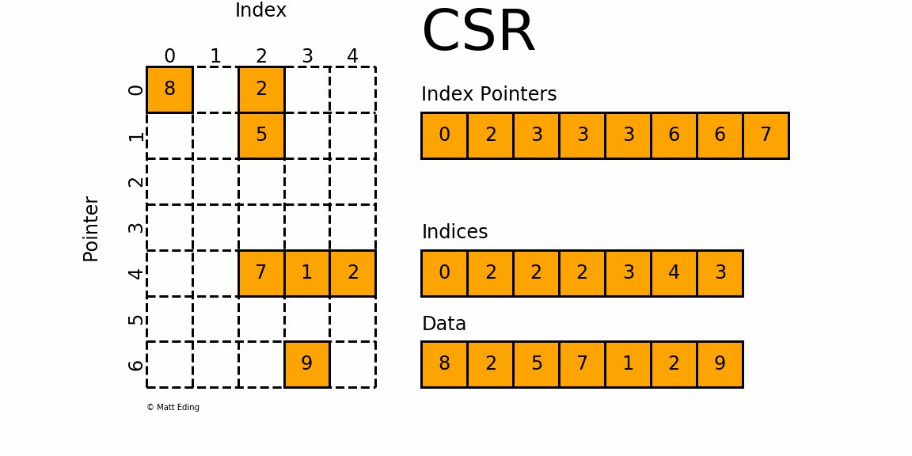

Sparse matrix–dense matrix multiplication (SpMM) is a core operation in many ML systems, including sparse linear layers, graph neural networks, and recommendation systems. Despite its importance, existing GPU libraries often struggle with irregular, unstructured sparsity patterns. Libraries such as cuSPARSE and PyTorch's sparse operators incur overhead from metadata processing and edge-case handling, and hence often underperform with unstructured sparsity. This motivates the need for dedicated CUDA kernels specifically optimized for CSR-based SpMM workloads.
Background
The Compressed Sparse Row (CSR) format stores only non-zero values using three arrays:
row_ptr, col_idx, and values. This format is well-suited
for unstructured sparsity as it offers high compression rates, but introduces challenges for
efficient parallel execution on GPUs.

Contributions
- Leveraged warp-per-row execution, shared memory buffering, and vectorized memory access to improve data reutilization and reduce global load/store traffic.
- Designed and implemented optimized CUDA kernels for CSR SpMM, outperforming vendor SOTA cuSPARSE.
-
Provided a Python API supporting seamless integration with PyTorch, outperforming
torch.sparse.
Methods
This project explores two scheduling strategies:
- Element-wise: One thread computes one output element.
- Warp-Per-Row (WPR): Each warp processes an entire sparse row.
sum = 0
for each nonzero entry j in sparse row:
A_col = column_index[j]
A_val = value[j]
sum += A_val * B[A_col, col]for each col = lane, lane+32, ... < K:
sum = 0
for each nonzero j in sparse row:
a = value[j]
c = column_index[j]
sum += a * B[c, col]
C[row, col] = alpha*sum + beta*oldThe element-wise approach appears lighter in time complexity; however, its loop length depends on the number of nonzero elements per row, which can be highly irregular and difficult to optimize.
In contrast, the WPR approach has a predictable outer loop structure, facilitating loop unrolling and vectorization. Warp-level scheduling also improves intra-warp synchronization and reduces execution stalls.
The following optimization techniques are also applied:
-
Vectorized load/store: Loading packed vectors of up to 4×
float32values simplifies the loop and reduces instruction count. - Shared memory buffering: Matrix tiles reused during computation are cooperatively loaded into shared memory, reducing global memory traffic and serving frequently accessed data with lower latency.
Experiments
Experiments were conducted on an NVIDIA GeForce RTX 4070 GPU, evaluated across multiple matrix sizes and sparsity levels.
-
Matrix sizes:
- Small:
[512, 1024] × [1024, 64] - Medium:
[1024, 2048] × [2048, 128] - Large:
[4096, 4096] × [4096, 128] - XL:
[8192, 4096] × [4096, 256]
- Small:
- Densities: 0.01 to 0.30
- Baselines: cuSPARSE and PyTorch sparse operators
Results
| Algorithm | Mean GFLOPS | Mean Speedup |
|---|---|---|
| WarpPerRowFp4 | 727 | 1.483 |
| WarpPerRowSmemFp4 | 595 | 1.294 |
| Element-wise | 531 | 1.161 |
| WarpPerRowSmem | 520 | 1.134 |
| cuSPARSE | 488 | 1.000 |
| WarpPerRow | 444 | 0.964 |
| Algorithm | Mean GFLOPS | Mean Speedup |
|---|---|---|
| WarpPerRowSmemFp4 | 479 | 2.297 |
| WarpPerRowFp4 | 466 | 2.267 |
| torch.sparse.addmm | 347 | 1.547 |
| WarpPerRowSmem | 324 | 1.702 |
| Element-wise | 310 | 1.633 |
| WarpPerRow | 275 | 1.553 |
| torch.sparse.mm | 240 | 1.000 |
In summary, our kernels are:
- 1.48× faster than cuSPARSE
- 1.38× faster than torch.sparse.addmm
- 2.30× faster than torch.sparse.mm
Source code is available on GitHub: github.com/anh-thh/csrspmm.